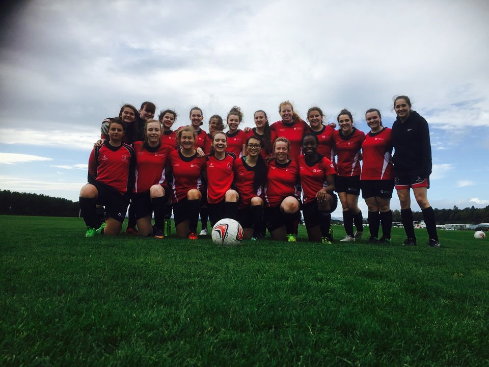

About the AFC
The Dundee University Amateur Football Club is dedicated to providing amateur footballers with the opportunity to compete competitively with other teams of their skill level and the training required to improve their skills.
History
"I have been the club captain for two years now and it has been an incredible honour to be part of this club. My role during my time has essentially like a president’s position. I oversee the running of the club on a day to day basis through delegation of different aspects to the rest of my committee. I also look to try new ideas concerning many different aspects of the club which I feel will be of benefit in the long run. This is in essence the more creative side of my position.
"In terms of changes to the organisational structure of the club, I changed the old regime, in which there were joint captaincies, to ensuring that there was not only a clear captain for each squad but also a vice captain to assist them. I thought it important to shift responsibility for the everyday running of the team to the captains and I implemented the popular decision to ensure that the 1st team was picked by the coach – relieving the team captain of that pressure. Through the use of Facebook I was also able to streamline how teams were announced to players, how timings were relayed to members and I was able to transform the advertising of games and social events, with the help of my committee.
"Upon becoming club captain, my original ideas were that of expansion for the membership of the club but in doing this I wished to retain the family feel that had made the club such a success in the past. I was pleased to see that this did continue in my time as club captain, as throughout the season boys from every team would go about and socialise with each other after games and trainings. I would always work closely with the Sports Union at the University to ensure that all 5 squads were receiving as close to equal treatment as was physically possible.
"From the season 2012/2013 to the 2013/2014 I have set about implementing the expansion of the club from three squads of differing ability to now having five fully functioning competitive teams. In my first season I created the 4th team which competed in the SSS league and were moderately successful. The following seasons saw the creation of the fifth team due to the incredible influx of both freshman and existing students who were encouraged to join by existing members at the start of season 13/14. This also allowed the 4th team to move up and compete, alongside the top 3 teams, in the BUCS leagues – the premium of university sport competition, and the 5th team compete in the SSS league.
"Having always looked toward the United States and their collegiate sports programmes as the pinnacle of how university sport in Scotland should be supported, I thought that an important aspect to take from this was the importance of the history of the club. Within this, I specifically focused on strengthening the link to the club’s alumni. Throughout my time as captain I have expanded our alumni following through our annual alumni dinner and their continued membership on the club’s Facebook page as well as on Twitter. I helped in creating a buzz around university for big matches that are coming up for any of the teams and encouraged boys not playing to come down and support their fellow club members. This culminated well with what must have been a record attendance at the 1st and 2nd team’s cup finals this year, and we all know how they went!
"This club is built on the incredibly selfless support of its members and especially its committee. I believe Dundee University does not do enough to increase the awareness of football in the very football orientated community that is Dundee. The University’s Sports Union is under-funded and as a result of this it is very hard for the football team to grow and compete with the likes of Stirling, Edinburgh and St Andrews. The club, however, has grown so much and now has one the highest number of matriculated members within the sports union. The club and its members are renowned not only for its large social following but now it’s for incredible on-field success. The top two teams winning this year’s BUCS Cup and Plate is one of my proudest moments as captain, but it is also an incredible moment in the club’s history.
"It is impossible to put into words who I should thank and how much this club has left a lasting effect on me, but one thing is for sure – my time at university would not have been anywhere near an all-round enjoyable experience were it not for this club. I owe so so much and I will be returning year after year to watch the club grow from strength to strength – starting with the tenure of Jamie Shanks, who takes over as captain from myself.
"Long live the DUAFC"
—Graham Horsman